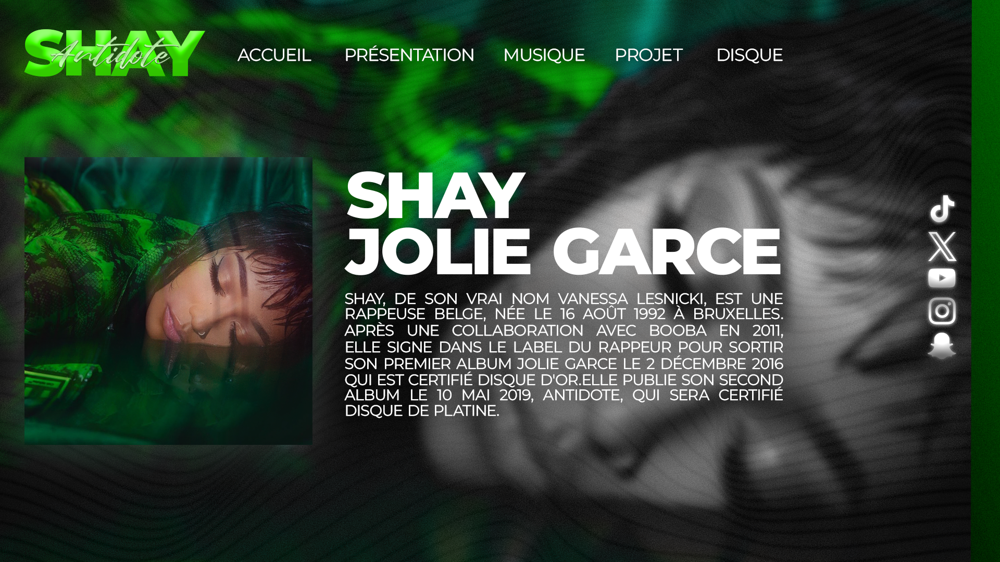

13k+
abonnés YouTube
Portfolio Candidature Master
Je transforme des sujets de société en formats audiovisuels impactants, puis je construis les expériences web qui les mettent en valeur. Objectif: relier narration, design et code.
13k+
abonnés YouTube
7.5k+
followers Twitch
+3M
vues cumulées sur YouTube
Mini-documentaires, storytelling visuel, direction artistique et montage.
BUT Informatique: web, logique logicielle, produits numériques orientés usage.
Sujets de société, actions terrain, contenus qui ouvrent le débat.
YouTube
J'alterne formats récents et vidéos fortes en impact. Le documentaire sur la réalité des gangs en Guadeloupe dépasse les 56 000 vues.
Voir la chaîneIntégrée ici pour montrer la direction éditoriale actuelle.
"La réalité des gangs en Guadeloupe" - plus de 56k vues.
Retrouver la vidéo

Conception d'univers visuels pour contenus YouTube et projets créatifs.
Voir BehanceProjets web et expérimentations front-end disponibles sur GitHub: architecture, intégration, interactions et mise en production.
Explorer GitHubCollaborations avec d'autres créateurs et passages relayés par des médias locaux. Approche: co-création, storytelling commun et diffusion multi-plateforme.
Semi-marathon pour SOS Mediterranee (1h44:09) et marathon prevu le 12 avril pour SOS Amitie, avec une strategie de visibilite video autour des associations.
Profil hybride: competence technique + execution creative + impact narratif. Je veux concevoir des projets utiles, exigeants et memorables.
Disponible pour echanges, entretiens et projets. Je peux presenter une selection de travaux YouTube, Twitch, TikTok et projets de developpement.